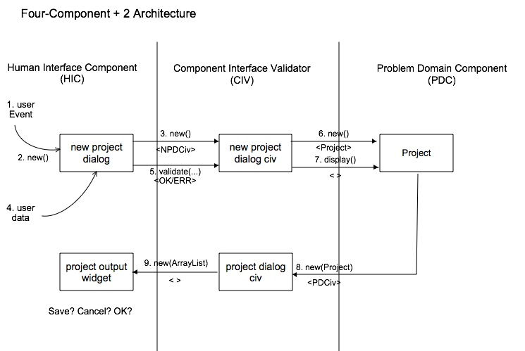

How Best to Use the CIV Objects. There are input CIVs, or objects that validate input-oriented GUI widgets before passing data into the PDC; and there are output CIVs, or objects that prepare internally formatted data into a GUI-viewable format for output widgets. According to the DaVinci standard, no HIC objects may import PDC or DMC objects; HIC classes must always send or receive data through a CIV object. As a result, the data shuttle approach was developed to allow type-agnostic data to be transported into and out of the system without a minimum of data and object coupling, and avoids the setters and getters that work around (read: breaks) object encapsulation and bulks up an otherwise elegant object's implementation.
Input widgets are created by some user-triggered event, such as happens when a user selects OPEN or NEW from the Menubar to create a new PDC object. The input widget is created, and in turn creates its corresponding CIV object. The HIC packs the field data into a dataShuttle (see below) and the CIV object unpacks it for validation. When the data is validated, the CIV object creates the PDC object (or whatever other action was desired) and passes the shuttle to the PDC object. Errors are returned immediately by the CIV to the HIC object for displaying in error dialogs or other means.
Output widgets work symmetrically in reverse of how input widget flow works.
Every PDC object that has data to be displayed should know how to display itself,
and thus should implement a display() method with data shuttle
support.
The PDC display() method creates the output CIV, passing the
data shuttle to the CIV constructor, which creates the GUI widget, passing the
same, or modified, data shuttle to the widget constructor.
HIC widgets can only display String data, so the data from the output CIV to the
widget can be prepared in several ways.
EnumMap data shuttle, and passed to the widget's constructor.
In this case, the order in which the data is put into the EnumMap
is irrelevant, because the enum key of the map is used for retrieval.
How to Use an EnumMap Data Shuttle A data shuttle is a EnumMap class containing a key-value pair that uses an enum as the key, and String data as its value. The data shuttle allows a collection of data to be transferred from an input GUI via an input CIV object to a PDC object without having knowledge of the PDC internals or data types. It also allows the PDC object to display data via an output CIV to one or more GUI widgets without knowing what data the GUI widget actually needs. In many cases, multiple output widgets will have different fields, and the data shuttle can contain the superset of all fields; the GUI then retrieves only the specific data needed for display.
Create a list of enums that the GUI widget, corresponding CIV, and PDC being used, can access. The enums are the keys to the GUI fields, and the String values are the data collected from (or displayed in) the GUI widget. Putting the enum list in the CIV object usually works, although a public class of enums can be used. (Multiple enum sets can be placed in the same public class of enums.)
The declaration of the data shuttle,
EnumMap<enumName, String>, where
enumName is the specific name (and Type) of the enum keys
created, and String is the value of the key-value pair.
For convenience, this is replaced with the more general dataShuttle
when used in method signatures in the explanations below.
Transporting Data IN from the GUI Widget
dataShuttle packFields()
in the widget that creates the data shuttle by moving the input field data into
the map, using an enum constant as the key, and the field data as the String
value. This method is called by the actionPerformed<> method
of the GUI widget in response to some user-triggered event. The map is passed
to the CIV's validateFields(dataShuttle). dataShuttle packShuttle(dataShuttle) in the
CIV object that moves the now-validated GUI data to PDC data associated with
the enum keys and puts it into the map as String data. If the data was valid, the
actual input data shuttle can be passed directly to the PDC.void unpack(dataShuttle) to update the PDC
attributes directly. Although the CIV knows the PDC data types and can update
the PDC attributes through setter methods (not recommended) and avoid
packing the data shuttle with Strings, that approach would require a setter for
each of the PDC attributes associated with the GUI fields. The data Shuttle
approach will avoid setters by allowing the PDC's
unpack() method to update the PDC attributes directly. display() method in the PDC object that creates
the output CIV and calls its packShuttle method.public EnumMap<enumClass, String>
packShuttle(EnumMap<enumClass, String>) that takes a data shuttle
(the EnumMap) and moves the PDC data associated with the enum keys
and puts it into the map as String data.Transporting Data OUT to the GUI Widget
dataShuttle packFields()
in the PDC to create a data shuttle by moving the attribute values into
the map, using an enum constant as the key, and the attribute data as the String
value. This method is called by the PDC display() method
The map is passed to the output CIV's constructor. void unpackFields(dataShuttle) method in the GUI
widget that the constructor can call to directly set the display values of its fields;
or at least, after the widget is instantiated, the unpackFields()
method can be called to populate the widget fields.
See the diagram below for an example of how the CIVs are used to create and
display a PDC Project. The steps below correspond to the method
calls in the diagram.

New Action method's
actionPerformed(Event)
creates the input widget NewProjectDialog NewProjectDialog creates the
NewProjectDialogCiv object, abbreviated NPDCiv. actionPerformed method calls
its dataShuttle packFields() method, and then calls the CIV's
createProject(dataShuttle) Project,
passing the data shuttle to the Project constructor. If not, error codes are
returned so that the proper error widget can be displayed. Project to display() itself. Project.display() calls
packShuttle() and creates a new output CIV to interface with an
output HIC widget, passing the data shuttle to the CIV constructor. ProjectDialogCiv creates the
ProjectDialog widget, sending it the data shuttle in the
ProjectDialog constructor.
LI> When the user closes the output widget, the thread is returned back to
the state in which the menubar was originally triggered.
NOTE: There is much commonality between the CIV package that interfaces to the HIC component, and the DMI package that similarly interfaces to the DMC (Data Management Component) package. Both CIV and DMI (Data Management Interface) work similarly, and for the same purpose. One difference is that the DMI can be tested by JUnit directly, but the GUI part of the HIC cannot.